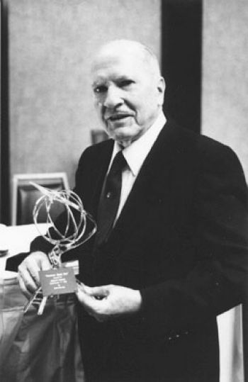

|

Robert Anson Heinlein (July 7, 1907 – May 8, 1988) was an American science-fiction writer. Often called the "dean of science fiction writers", he was an influential and controversial author of the genre in his time.
Heinlein became one of the first science-fiction writers to break into mainstream magazines such as The Saturday Evening Post in the late 1940s. He was one of the best-selling science-fiction novelists for many decades, and he, Isaac Asimov, and Arthur C. Clarke are often considered to be the "Big Three" of science fiction authors.
A notable writer of science-fiction short stories, Heinlein was one of a group of writers who came to prominence under the editorship of John W. Campbell, Jr. at his Astounding Science Fiction magazine—though Heinlein denied that Campbell influenced his writing to any great degree.
Within the framework of his science-fiction stories, Heinlein repeatedly addressed certain social themes: the importance of individual liberty and self-reliance, the obligation individuals owe to their societies, the influence of organized religion on culture and government, and the tendency of society to repress nonconformist thought. He also speculated on the influence of space travel on human cultural practices.
Heinlein was named the first Science Fiction Writers Grand Master in 1974. He won Hugo Awards for four of his novels; in addition, fifty years after publication, three of his works were awarded "Retro Hugos"—awards given retrospectively for works that were published before the Hugo Awards came into existence. In his fiction, Heinlein coined terms that have become part of the English language, including "grok", "waldo", and "speculative fiction", as well as popularizing existing terms like "TANSTAAFL", "pay it forward", and "space marine". He also anticipated mechanical Computer Aided Design with "Drafting Dan" and described a modern version of a waterbed in his novel The Door into Summer, though he never patented or built one. In the first chapter of the novel Space Cadet he anticipated the cell-phone, 35 years before Motorola invented the technology. Several of Heinlein's works have been adapted for film and television.
Honors:
In his lifetime, Heinlein received four Hugo Awards, for Stranger in a Strange Land, The Moon is a Harsh Mistress, Starship Troopers, and Double Star, and was nominated for four Nebula Awards, for Stranger in a Strange Land, Friday, Time Enough for Love, and Job: A Comedy of Justice. He was also given two posthumous Hugos, for Farmer in the Sky and The Man Who Sold the Moon.
The Science Fiction Writers of America named Heinlein its first Grand Master in 1974, presented 1975. Officers and past presidents of the Association select a living writer for lifetime achievement (now annually and including fantasy literature).
Main-belt asteroid 6312 Robheinlein (1990 RH4), discovered on September 14, 1990 by H. E. Holt, at Palomar was named after him. Likewise, the Heinlein crater on Mars is named after him.
The Science Fiction and Fantasy Hall of Fame inducted Heinlein in 1998, its third class of two deceased and two living writers and editors.
In 2001 the United States Naval Academy created the Robert A. Heinlein Chair In Aerospace Engineering.
There was an active campaign to persuade the Secretary of the Navy to name the new Zumwalt-class destroyer DDG-1001 the USS Robert A. Heinlein; however, DDG-1001 will be named USS Monsoor, after Michael Monsoor, a Navy SEAL who was posthumously awarded the Medal of Honor for his service in Iraq.
In December 2013 Heinlein was announced as an inductee to the Hall of Famous Missourians. His bronze bust, created by Kansas City sculptor, E. Spencer Schubert, will be one of forty-four on permanent display in the Missouri State Capitol in Jefferson City.
The Libertarian Futurist Society has honored six of Heinlein's novels with their Hall of Fame award. The first two during his lifetime for The Moon Is A Harsh Mistress and Stranger in a Strange Land. Four have been awarded posthumously for Red Planet, Methuselah's Children, Time Enough for Love and Requiem.
|